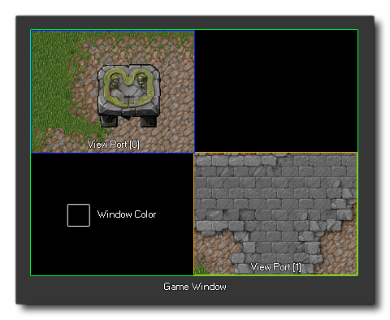

This function can set the background colour of the game window. This colour represents that which will be used for those areas of the game window that are not occupied by any views. The following image illustrates this: 
The above image has two views with two view ports, each one drawn at different positions. This stretches the game window to accommodate both ports and uses the window colour to colour the background where no view is shown.
window_set_colour(colour);
| Argument | Description |
|---|---|
| colour | The colour to set the region. |
N/A
if window_get_colour() != c_black
{
window_set_colour(c_black);
}
The above code will check the window colour to see if it is set as black or not, and if it is not it sets it to black.